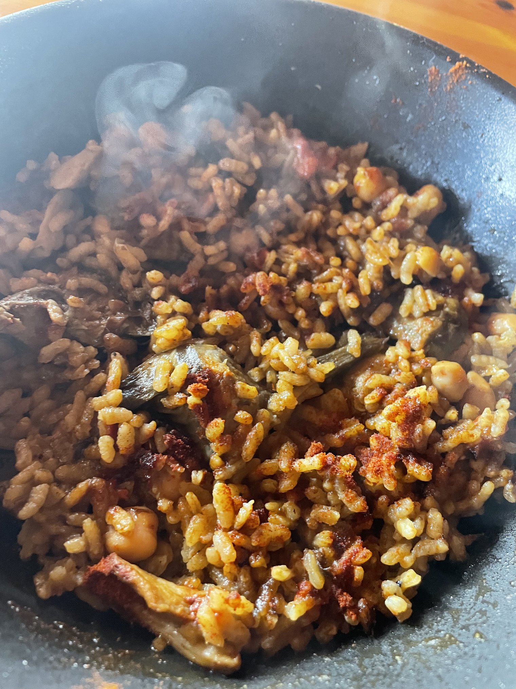

Arroz de alcachofas, ceps, pimiento, berenjena y garbanzos
Ingredients
×
- 100 g de arroz por persona
- alcachofas
- ceps
- pimiento
- berenjena
- garbanzos cocidos
- tomate
- cebolla
- carne de ñora
- caldo de verduras
- spirulina

Preparación
Paso 1
Contar 100 g de arroz por persona. Sofreír todo por separado: alcachofas, ceps y pimiento. Hornear berenjena y tener garbanzos cocidos.
Paso 2
Preparar un sofrito de tomate y cebolla muy reducido, con carne de ñora.
Paso 3
Juntar todo con el arroz y añadir caldo de verduras en el que se haya diluido spirulina.
Paso 4
Cocer 14min: los primeros 7min a fuego bajo y los últimos 7min a fuego alto para tostar.